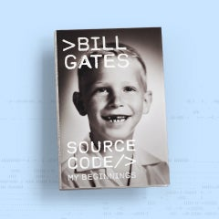
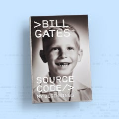
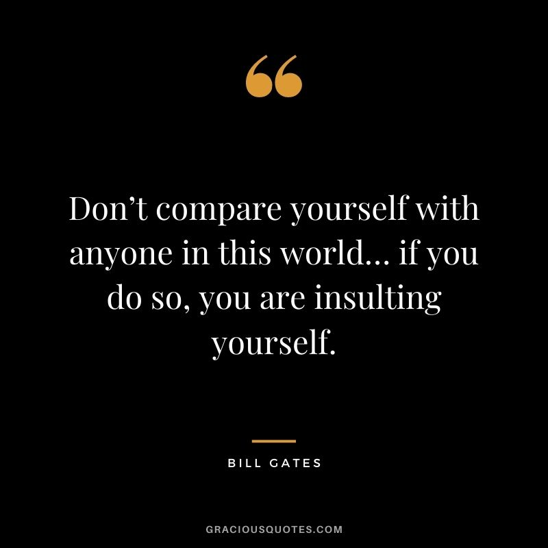
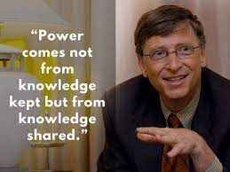
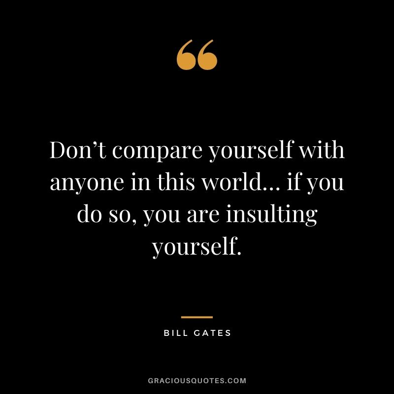
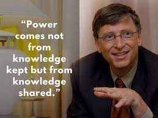

![logo]()

PROJECTS
Microsoft Projects
1.Windows Operating System:Gates oversaw the development of the Windows operating system.
2. Microsoft Office:Gates led the development of the Microsoft Office software suite.
3. Azure Cloud Computing:Gates was involved in the development of Microsoft's Azure cloud computing platform.
Philanthropic Projects
1.Bill and Melinda Gates Foundation: Gates co-founded the foundation with his wife Melinda in 2000.
2.Global Health Programs:The foundation has initiatives to combat diseases such as malaria, tuberculosis, and HIV/AIDS.
3.Education Programs:The foundation supports initiatives to improve access to quality education, particularly in developing countries.
Personal Projects
1.Cascade Investment:Gates' private investment firm, which manages his personal wealth.
2.Corbis:A digital image company founded by Gates in 1989 (now part of Getty Images).
3.bgC3: A think tank and research firm founded by Gates in 2008.
BLOGS
Bill Gate's blog is called Gates Notes, where he shares his thoughts on various topics, including books he's read, philanthropic efforts, and innovative technologies. On his blog, you can find articles, videos, and podcasts on subjects like global health, education, and climate change.
Some of his recent posts include
The Books on My Bookshelf: Bill Gates shares his favorite books and why he loves them
What I Do for Work, Fulfillment, and Fun:Gates talks about his passions and interests outside of work
What Our Leaders Can Do Now:Gates shares his thoughts on what leaders can do to address pressing global issues
 

QUOTES


.jpg) 


